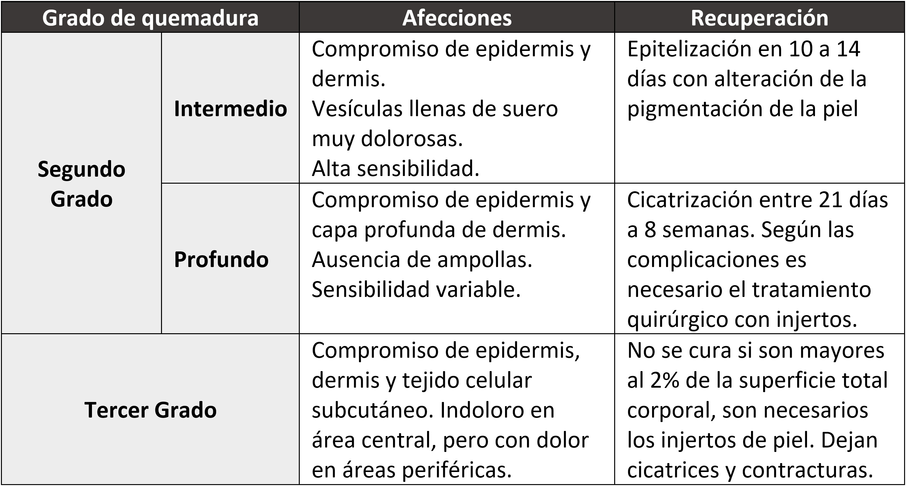
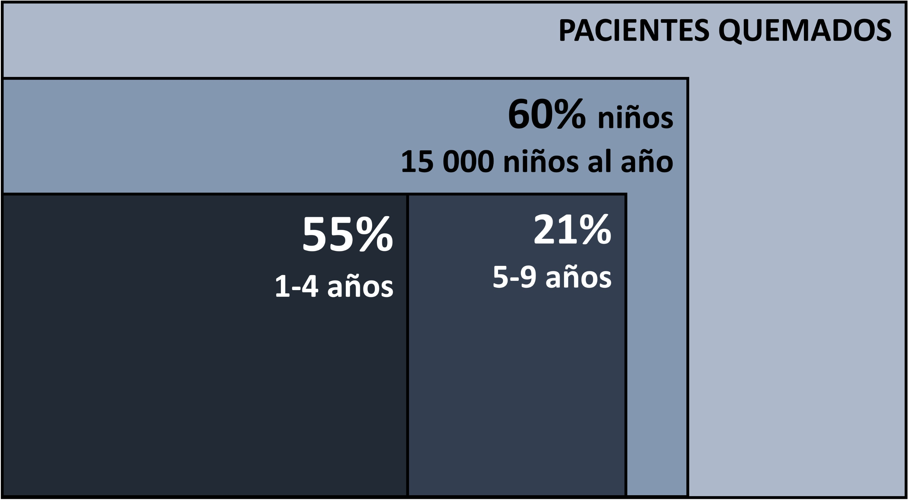

Prevalencia de Anemia en Niños.
En el Perú la prevalencia de anemia en niños muestra un porcentaje más alto durante sus periodos de vida más tempranos. Y se va reduciendo hasta en un 40% cuando alcanzan los 59 meses de edad. El nivel de educación de la madre parece contribuir en la disminución de los porcentajes de anemia. Es decir que en madres de educación superior la prevalencia de anemia en sus hijos baja de un 47.1% a un 26.5% (Ver Tabla N°1).

Los porcentajes de anemia por departamento del Perú están distribuidos en valores en torno al 40% aproximadamente. Encontrando valores más altos en los departamentos de Puno y Loreto y los valores más bajos en Arequipa y en el Callao (Ver Tabla N°2). Se puede decir que la prevalencia de anemia se ve reducida en departamentos que mantienen relativa proximidad a la capital Lima.

Una vista histórica de la prevalencia de anemia en niños es la que podemos ver en el Grafico N°1. Según el INEI en su encuesta demográfica, el promedio de anemia en niños de 6 a 59 meses de edad, está en torno al 34% de prevalencia en los últimos 5 años. Cifra que, aunque no ha cambiado mucho, debido a que no se aprecia una tendencia significativa, es de real importancia ya que no parece estar disminuyendo. Se puede agregar que la mayor cantidad de esos casos es de anemia del tipo leve, pero casi la tercera parte es de anemia moderada, lo cual es aún más alarmante.
